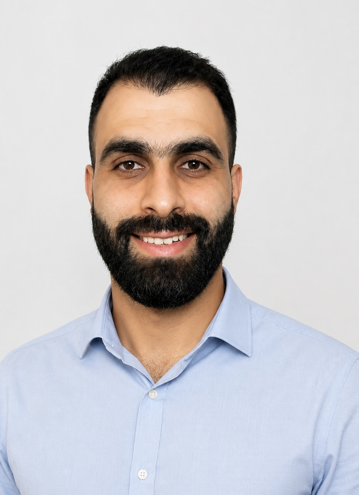

Ahmed Salah
Administrator and web developer
Contact Me
Summary
Administrative & web developer with 1st honor master's degree in international business management and Bachelor in accounting. For the last 6 years I have helped professionals and directors across different sectors to function more effectively through careful administrative support, calendar scheduling, travel planning, event and meetings coordination. I’m skilled with scheduling complex calendars, advanced Excel reports, managing event, and cross-teams communication. Currently improving my web development skills and learning to apply new skills to be a better administrative or personal assistant.
Core Achievements
- Bachelor Degree in accounting (2019).
- First Class Honours MSc in International Business Management Griffith College Dublin (2024).
- Hold a record of managing 500+ radiology appointments in one week while maintaining accuracy in a high-volume healthcare environment (2026).
- Employee of the Year Nominee (2025 & 2026), Mater Private Network.
- Conducted case study postgraduate research to my employer Balqees LTD (2024); that was selected for presentation at two main festivals in Ireland, Eirth festival Dublin (2024) and Picnic festival Dublin (2025).
- Google Data analytics Foundation online course (2026)
- Full Stack Web Development Bootcamp - Udemy(2026)
EMPLOYMENT HISTORY
RADIOLOGY COORDINATOR AND SCHEDULER
2025-Present
Mater Private Network-Dublin
- Bookkeeping large database for patients, updating data while processing scans requests.
- Coordinate and schedule radiology "X-rays, Ultrasounds, DEXAs" appointments for outpatients using Excel and the PERL scheduling system.
- Email and phone communication with managers, clinicals, and patients regarding their appointments.
- Review appointment details and liaise with healthcare professionals to ensure a schedule.
- Maintain accurate appointment records and tracking systems using Excel to monitor schedules, changes, and workflow.
Core Achievements:
- Hold a record of over 500+ appointments in a single week.
- Employee of the Year nomination 2025.
- Employee of the Year nomination 2026.
General Administrator
2024-2025
Mater Private Network-Dublin
- Registered patients, completed admissions, and ensured all required consent forms and documentation were accurately signed.
- Verified insurance information, explained coverage and payment procedures, and provided professional patient support.
- Provided administrative support across Radiology, the Emergency Department (ED), and other clinical departments, ensuring efficient daily operations.
EXECUTIVE ASSISTANT
2022-2025
Balqees LTD-Dublin
- Coordinated managers' schedules, meetings, and appointments while providing administrative support across the business.
- Travel planning from Ireland to Jordan and return.
- Monthly preparation of purchases and sales reports.
- Help the accounting department with monthly financial documentation, income statements, and tax-related records.
- Supported the planning and organization of marketing events.
- Coordinated annual marketing events to strengthen brand awareness and participating in local festivals.
Achievements:
- Increase Instagram engagement by 50% in 2023.
- Conduct academic case study research to one of the companies' restaurants to help the marketing department improve the brand image, focused on storytelling marketing.
- Chosen to represent the company at the Earth festival in Dublin, 2024.
- Chosen to represent the company at the Picnic festival in Dublin, 2025.
CUSTOMER SERVICES
2019-2022
Palestine Islamic Bank-Palestine
- Delivered excellent customer service by assisting clients with banking products and services.
- Promoting and selling premium banking cards and loan products.
- Maintaining accurate documentation and building strong customer relationships.
Achievements:
- Sold over 100 premium cards in 2021.
- Sold US$2.5 million in loans in 2021.
EDUCATION
- MSc in International Business Management, Griffith College Dublin (2024).
- Bachelor Degree in accounting (2019).
PROFESSIONAL CERTIFICATIONS
- Full Stack Web Development Bootcamp - Udemy(2026)
- Google Data Analytics Professional Certificate- Coursera (2026)
SKILLS
- Intermediate Web Development skills, HTML, CSS, and JavaScript
- Microsoft Office Suite (Word, Excel, PowerPoint, Outlook)
- Google Workspace (Docs, Sheets, Slides, Gmail)
- Calendar Management and Scheduling
- Travel Planning and Coordination
- Event Planning and Coordination
- Data Entry and Database Management
- Customer Service and Communication Skills
- Problem-Solving and Decision-Making
- Time Management and Prioritization
- Attention to Detail and Accuracy
LANGUAGES
- Arabic: Native
- English: Fluent
- Italian: Basic
ADDITIONAL INFORMATION
- January- June 2019-Bethlehem: Digital marketing training with the Palestinian Sustainable Development Institution (PSD).
- May 2018-Bethlehem: 4 days Marketing campaign for the Herbawi local company at Bethlehem University.
- October 2016-Bethlehem University: Organized a university fundraising initiative to collect donations for Crèche Holy Family Children’s Home in Bethlehem (Daughters of Charity).